This is Graph Solutions
Science is what matters. Leave us the design.
Helping researchers, universities and scientific organisations communicate complex ideas with clarity, accuracy and elegance.
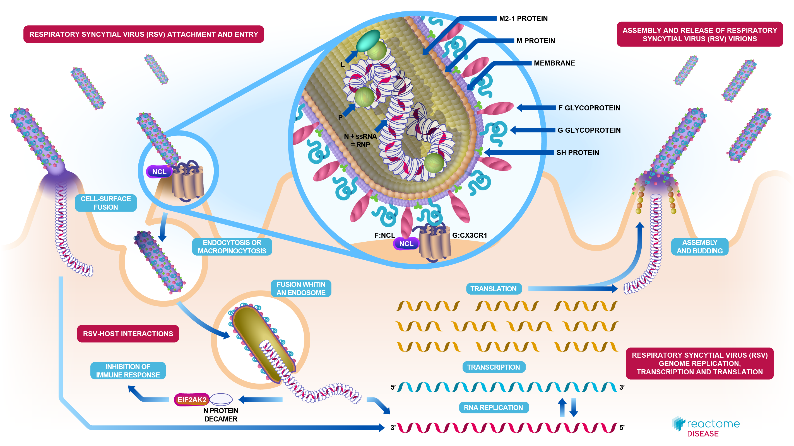
Trusted by
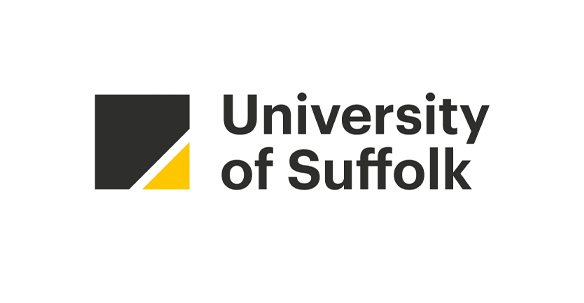
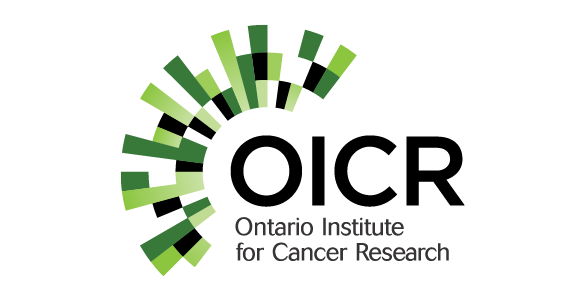
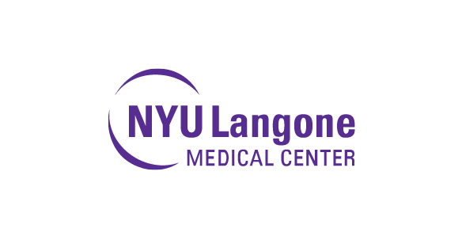
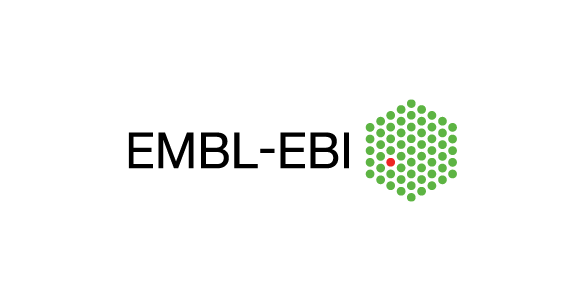
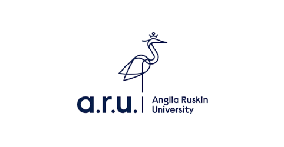
Featured project
Reactome
Reactome is an open-source, open-access, manually curated, and peer-reviewed pathway database. Its goal is to provide intuitive bioinformatics tools for the visualisation, interpretation and analysis of biochemical knowledge, supporting basic and clinical research, genome analysis, modelling, systems biology and education.
The previous visual identity was a complex illustration reflecting the intricate nature of biological pathways. While visually rich, it lacked clarity and accessibility for the diverse scientific audience Reactome serves.
Starting from concepts such as Human, Biology, Rhizome, and Molecular, as well as ideas like Close-up detail, Stepped, and Layered, we began developing a new logo and visual language for Reactome — including web, social media, and email design.
Layering emerged early in the creative process, symbolising the depth of information within Reactome. However, the focus soon shifted towards expressing the rhizomatic nature of the Pathway Browser — the resource’s most defining and recognisable feature.
During review sessions with the Reactome team, the typography was particularly well received. Together, we decided to move away from the rhizome concept, which felt too limiting, and instead highlight the layered structure of knowledge and data that Reactome represents.
The result was the -internally known as- Reactome 3.0 identity, launched in 2017 — a clearer, more open, and legible visual system that communicates Reactome’s core values: interconnected reactions, layered analyses, and open scientific knowledge. The new design conveys transparency and accessibility, shaping a visual identity that mirrors Reactome’s role as a repository of shared and unfolding information.
In 2026, the new iteration of Reactome — Reactome 4.0 — will be officially launched, featuring a complete redesign of the UX and UI across all main features. You can visit the beta here →
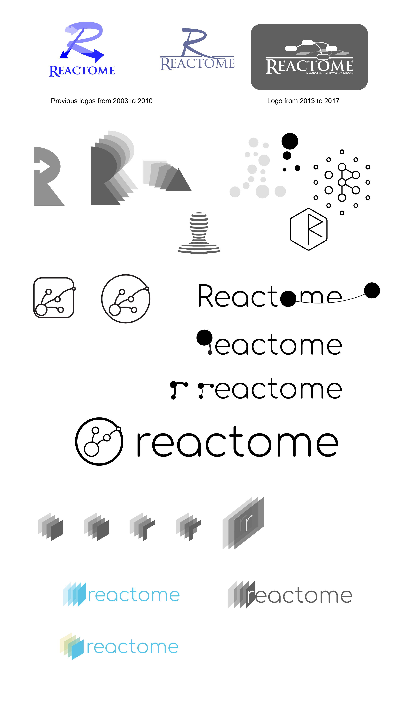
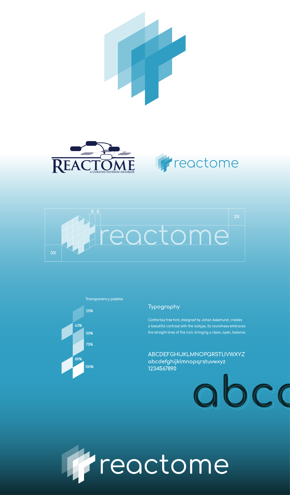
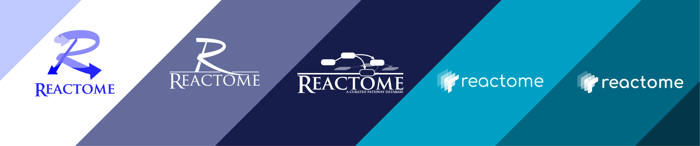
Featured project
IntAct
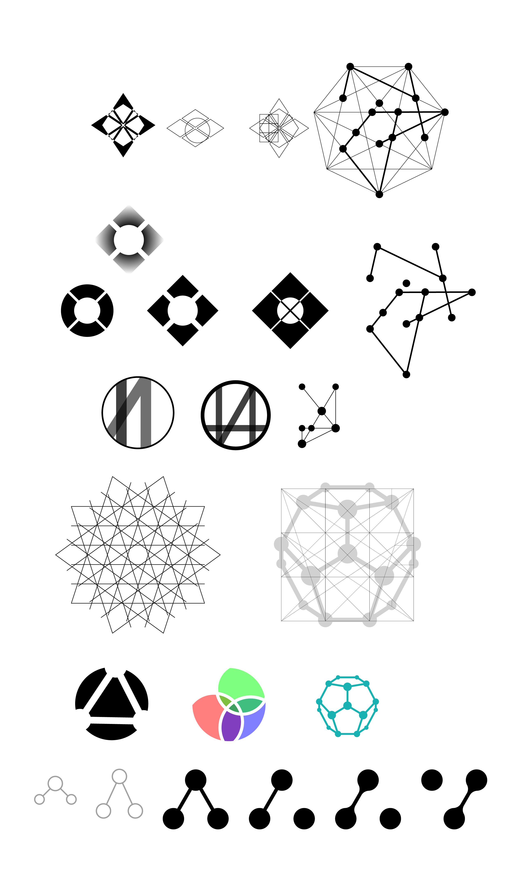
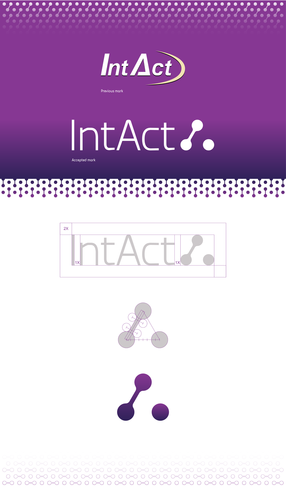
IntAct is _
a road map of the cell; its wireframe. interactions in great deep detail. the essence of life.
IntAct _
wants to have a stronger image. by updating the resource. focusing on quality data, content, imagery and UX.
This is an excerpt from IntAct’s excellent brief — full of strong imagery, a clear vision for the project, and a genuine expression of their passions and goals for both the short and long term.
“Manually curated data based on evidence” and “depth in detail” are the foundational concepts on which this rebranding was built — they define what makes IntAct stand out and what it should be recognised for.
The ideation phase began with a strong sense of geometry, a visual language deeply rooted in IntAct’s data visualisations. Inspiration was also drawn from ancient geometric patterns that have permeated millennia and are found both in microscopic life and in scientific experimentation.
The need for a simple and clear image was raised by the team, who felt that IntAct’s inherent complexity was already too present within the resource itself.
Visit IntAct →Selected identities
Clear, memorable and distinctive visual systems.
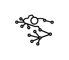
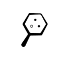
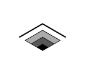
Scientific illustration
Helping researchers communicate complex biology.
Every illustration is developed from published evidence and designed to remain scientifically rigorous while improving understanding and visual impact.
Animation
Visual storytelling for scientific research.
Motion graphics can simplify difficult concepts and create engaging educational resources for scientists, students and the public.
Let's work together
Have a project in mind?
Whether you're developing a scientific resource, preparing a publication or creating a new visual identity, we'd love to hear about it.
hello@graphsolutions.co.uk